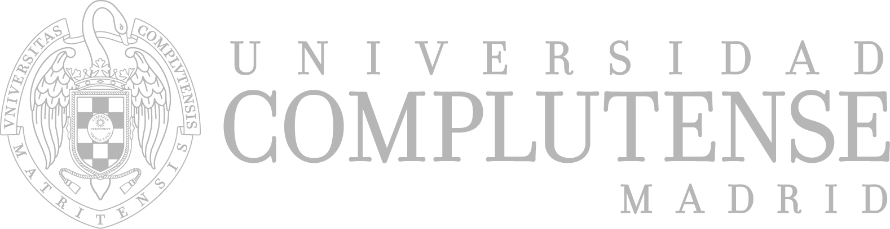

Principios de Econometría
Grado en Filosofía, Política y Economía (PPE) · UCM

Menos contenido, pero mejor entendido.
Cómo usar este material
Cada sesión se ofrece en varios formatos. Para las prácticas de laboratorio, además, el guion completo de Gretl. Los cuadernos electrónicos son material interactivo complementario.
- PDF para leer o imprimir sin conexión.
- HTML la misma lección para navegador.
- transparencias (reveal.js), las mismas que se proyectan en clase.
- Guion Gretl código
.inpcompleto de la práctica. - Cuaderno notebook Jupyter interactivo (ejecutable online sin instalar nada desde MyBinder).
El software del curso es Gretl (libre y gratuito); conviene instalarlo antes de la primera práctica.
Salvo los guiones de Gretl (licencia GNU GPL v3 o posterior), todo el material (apuntes, transparencias, cuadernos) se distribuye bajo licencia Creative Commons BY-SA 4.0.
Calendario de sesiones
Las 26 sesiones del curso, jueves y viernes, con su tipo (lección o laboratorio). El código de sesión enlaza con el bloque donde aparece su información completa. Dos excepciones al ritmo habitual: el viernes 25 de septiembre se imparten dos sesiones seguidas (S06 y S07) y, en contrapartida, el viernes 2 de octubre no hay clase.
| Sesión | Tipo | Fecha |
|---|---|---|
| S01 | Lección 1 | jue 10-sep-2026 |
| S02 | Lección 2 | vie 11-sep-2026 |
| S03 | Lección 3 | jue 17-sep-2026 |
| S04 | Laboratorio | vie 18-sep-2026 |
| S05 | Lección 4 | jue 24-sep-2026 |
| S06 | Lección 5 | vie 25-sep-2026 |
| S07 | Laboratorio | vie 25-sep-2026 |
| S08 | Lección 6 | jue 01-oct-2026 |
| S09 | Lección 7 | jue 08-oct-2026 |
| S10 | Lección 8 | vie 09-oct-2026 |
| S11 | Laboratorio | jue 15-oct-2026 |
| S12 | Lección 9 | vie 16-oct-2026 |
| S13 | Lección 10 | jue 22-oct-2026 |
| S14 | Laboratorio | vie 23-oct-2026 |
| S15 | Lección 11 | jue 29-oct-2026 |
| S16 | Laboratorio | vie 30-oct-2026 |
| S17 | Lección 12 | jue 05-nov-2026 |
| S18 | Laboratorio | vie 06-nov-2026 |
| S19 | Lección 13 | jue 12-nov-2026 |
| S20 | Lección 14 | vie 13-nov-2026 |
| S21 | Laboratorio | jue 19-nov-2026 |
| S22 | Laboratorio | vie 20-nov-2026 |
| S23 | Lección 15 | jue 26-nov-2026 |
| S24 | Lección 16 | vie 27-nov-2026 |
| S25 | Lección 17 | jue 03-dic-2026 |
| S26 | Laboratorio | jue 10-dic-2026 |
Introducción
Qué es la econometría, sus tres usos (describir, predecir, inferir causalmente) y la primera pista de la idea que vertebra el curso: los datos como vectores.
+ más detalles
Arrancamos con la cita de Ragnar Frisch —«la econometría es la medida de lo económico»— y con el mantra que preside todo el programa: preferimos entender bien pocas cosas a entender mal muchas. Se presenta la tipología de datos (sección cruzada, series temporales) y una batería de ejemplos que reaparecerán durante el curso: salarios y educación, demanda de tabaco, precios de la vivienda de Boston. Y se siembra, sin desarrollarla aún, la idea que da título a este programa: los datos de una muestra son vectores de \(\mathbb{R}^n\), y muchas herramientas estadísticas —media, varianza, regresión, \(R^2\)— son, en realidad, construcciones geométricas.
Tema I · El lenguaje: álgebra lineal en \(\mathbb{R}^n\) (S02–S04)
Antes de hablar de estadística, necesitamos un lenguaje común. Aquí se construyen, sin ningún contenido estadístico todavía, las herramientas geométricas —producto escalar, norma, ángulo, ortogonalidad, proyección— sobre las que se apoyará todo lo demás.
Los datos como listas de números: combinaciones lineales, producto escalar y norma euclídea, sin ningún contenido estadístico todavía.
+ más detalles
Un vector deja de ser la flecha de bachillerato para convertirse en lo que realmente usaremos: una lista ordenada de números. Se presenta la combinación lineal —pieza central de toda la asignatura, porque la regresión será una combinación lineal de sus regresores—, el producto escalar y la norma euclídea, deducida vía Pitágoras. Al final se anticipa, sin resolverlo aún, un segundo producto escalar —el «estadístico», con un factor \(1/n\)— que se justificará con detalle más adelante.
Pitágoras en \(\mathbb{R}^n\), el coseno como consecuencia de Pitágoras, Cauchy–Schwarz y la ortogonalidad: la piedra angular de toda regresión.
+ más detalles
Se demuestran, con todo rigor y para \(\mathbb{R}^n\) en general, el teorema de Pitágoras, la fórmula del coseno de un ángulo, la desigualdad de Cauchy–Schwarz y la desigualdad triangular. Dos vectores son ortogonales cuando su producto escalar es cero. Queda sembrada, para varias sesiones más adelante, la idea de que minimizar una distancia —el criterio que define el ajuste por mínimos cuadrados— es, geométricamente, proyectar.
Laboratorio en el aula del decanato (la habitual).
Dos prácticas de manejo básico del programa: estadísticos descriptivos e importación de datos externos.
Interfaz de Gretl, carga de un dataset de muestra, estadísticos descriptivos, histograma y diagrama de caja.
Importación del dataset original de Boston Housing (Harrison y Rubinfeld, 1978) desde un fichero externo, con una variable dicotómica que reaparecerá más adelante.
Tema II.1 · Regresión con un regresor constante (k=1): la estadística descriptiva (S05–S07)
El primer caso, y el más sencillo, de la idea central del curso: proyectar sobre la recta generada por el vector de unos. Aquí la media, la varianza, la covarianza y la correlación dejan de ser fórmulas sueltas: son, todas ellas, producto de la misma construcción geométrica —proyección, norma, ángulo— vista desde ángulos distintos.
La media aritmética no es un cálculo aparte: es la proyección ortogonal del vector de datos sobre la recta generada por el vector de unos.
+ más detalles
Se resuelve, por primera vez, un problema de mínima distancia en \(\mathbb{R}^n\): proyectar un vector sobre una recta. Aplicado a la recta generada por el vector de unos, el resultado es exactamente la media aritmética —y el residuo de ese ajuste, ortogonal a la recta, tiene siempre suma cero—. Es la primera vez que se dice explícitamente: calcular una media ES, sin saberlo, resolver un ajuste por mínimos cuadrados.
Sesión doble: este viernes se imparten seguidas esta lección y el laboratorio S07.
La varianza es el cuadrado de una distancia; la covarianza, un producto escalar; la correlación, el coseno de un ángulo.
+ más detalles
Se generaliza la idea anterior a dos vectores. El teorema de Pitágoras de la lección previa entrega, sin ningún truco algebraico adicional, la conocida «fórmula de cálculo» de la varianza. La covarianza se define como el producto escalar de los vectores en desviaciones, y la correlación, como el coseno del ángulo entre ellos —por lo que está, necesariamente, entre \(-1\) y \(1\).
Laboratorio en el aula del decanato (la habitual). Sesión doble: este viernes se imparten seguidas la lección 5 (S06) y este laboratorio.
Verificación numérica, con datos reales, de que la correlación es exactamente el coseno de un ángulo —y de que no importa por qué número se divida.
Con datos generados por el propio guion, se comprueban «a mano» las identidades de ortogonalidad y Pitágoras de las dos lecciones anteriores.
Cuatro conjuntos de datos con la misma media y desviación típica, pero formas radicalmente distintas: por qué un resumen numérico nunca sustituye a un gráfico.
Tema II.2 · Regresión con dos regresores (k=2): la regresión lineal simple (S08–S11)
Se añade un segundo regresor a la constante: ajustar una recta de regresión a una nube de datos consiste, en el fondo, en proyectar sobre un plano. La misma lógica de proyección y ortogonalidad —ahora con dos condiciones en vez de una— entrega la recta de mínimos cuadrados y su medida de bondad de ajuste, \(R^2=\cos^2\theta\).
Ajustamos un vector de datos proyectando sobre el plano generado por el vector de unos y el regresor.
+ más detalles
Generalización directa de la lección de la media: en vez de proyectar sobre una recta, se proyecta sobre el plano generado por el vector de unos y el regresor no constante. La ortogonalidad del residuo frente a todo el plano se traduce en dos condiciones —una por cada regresor— que quedan planteadas, sin resolver todavía, como tarea pendiente para la sesión siguiente.
Resolviendo las dos condiciones de ortogonalidad se obtienen, sin usar matrices, los dos coeficientes de la recta de regresión.
+ más detalles
Se despeja el sistema planteado en la lección anterior: la pendiente resulta ser la covarianza dividida por la varianza del regresor —equivalentemente, la correlación reescalada por el cociente de desviaciones típicas—. Una vía alternativa, cambiando a regresores ortogonales, cobra una promesa hecha varias sesiones atrás con la desigualdad de Cauchy–Schwarz.
Un triángulo rectángulo escondido en cada regresión: de él nace la descomposición de la varianza y el coeficiente de determinación \(R^2\).
+ más detalles
Las dos condiciones de ortogonalidad de la lección anterior, vistas con el teorema de Pitágoras, descomponen la varianza de los datos en la del vector de ajuste más la del residuo. El cociente entre ambas es, literalmente, el coseno al cuadrado de un ángulo: así nace \(R^2\). Se cierra con una advertencia importante: esta descomposición ortogonal es puramente algebraica y nunca implica, por sí sola, una relación causal.
Laboratorio en el aula del decanato (la habitual).
El ejemplo resuelto a mano en la lección anterior, reproducido con el comando ols de Gretl.
Dos regresiones simples sobre precios de vivienda, con verificación manual de \(R^2=\rho^2\).
Personalizar y exportar gráficos y resultados de una regresión, para un informe reproducible.
Tema II.3 · El puente: variables aleatorias y modelo lineal simple (S12)
Todo lo anterior se hizo sobre datos concretos, sin ningún supuesto probabilístico. Esta sesión da el salto: de vectores de \(\mathbb{R}^n\) a variables aleatorias, con la esperanza condicional como análogo del vector de ajuste.
El salto de la muestra a la población: la esperanza condicional como proyección ortogonal, y el nacimiento del modelo clásico de regresión lineal.
+ más detalles
Tras varias sesiones trabajando exclusivamente con datos, esta lección construye un diccionario entre la geometría de \(\mathbb{R}^n\) y el espacio de las variables aleatorias: la esperanza condicional \(E[Y\mid X]\) ocupa el lugar del vector ajustado. Se presentan los supuestos del modelo clásico de regresión lineal y se insiste, de nuevo, en que la descomposición ortogonal ni requiere ni implica causalidad alguna (es un mero resultado algebraico).
Tema II.4 · Regresión lineal múltiple y modelo clásico de regresión lineal (S13–S14)
La generalización a cualquier número de regresores. La geometría es exactamente la misma que en los casos anteriores; lo único nuevo es un lenguaje —la notación matricial— para no ahogarse en sumatorios.
La geometría no cambia con más regresores: solo el lenguaje para manejarla sin ahogarse en sumatorios.
+ más detalles
Se introduce una notación matricial ligera —y un operador selector para leer filas y columnas— que comprime en una sola expresión las condiciones de ortogonalidad ya conocidas, ahora una por cada regresor. Se plantean las ecuaciones normales y se explica, con un ejemplo, por qué \(R^2\) deja de coincidir con el cuadrado de ninguna correlación simple cuando hay más de un regresor.
Laboratorio en el aula del decanato (la habitual).
Con solo 14 viviendas, un coeficiente cambia de signo al controlar por otra variable: el efecto parcial, ceteris paribus.
Por qué \(R^2\) nunca empeora al añadir regresores, y cómo el \(R^2\) ajustado corrige ese sesgo mecánico.
Ajustes polinómicos de grado creciente mejoran el ajuste… hasta producir una extrapolación absurda.
La notación matricial de la lección anterior, puesta a prueba con datos simulados.
Tema III · Inferencia estadística (S15–S19 y S21)
Con el modelo ya estimado, cabe preguntar si el ajuste obtenido es fiable: ¿es \(\hat\beta\) un buen estimador?, ¿qué tan precisos son los coeficientes?, ¿son las variables explicativas significativas? Un bloque compacto: los contrastes esenciales (\(t\), \(F\)), sin ánimo de exhaustividad.
¿Es \(\hat\beta_2\) un buen estimador? Insesgadez y varianza, demostradas para la regresión simple.
+ más detalles
La fórmula de la pendiente obtenida en la lección 7 es, una vez hecha la geometría, una expresión puramente aritmética; basta con evaluarla sobre las variables aleatorias de una muestra, en lugar de sobre datos fijos, para convertir un número (la estimación) en una variable aleatoria (el estimador). De ahí salen las dos propiedades: \(\hat\beta_2\) es insesgado —sólo hacen falta la linealidad y el muestreo aleatorio— y su varianza vale \(\sigma^2/\sum_i(X_i-\overline{X})^2\), donde se lee que más dispersión en el regresor, o más observaciones, dan más precisión. Se enuncian además, sin demostrarlos, el teorema de Gauss–Markov (MCO es BLUE) y la estimación de \(\sigma^2\) mediante la cuasivarianza de los residuos, con su divisor \(n-k\) de grados de libertad.
Laboratorio en el aula 1 (excepcionalmente, no en el aula habitual del decanato).
Se simulan miles de muestras de un mundo con parámetros conocidos: la media de las estimaciones cae sobre \(\beta_2\) y su dispersión coincide con la fórmula de la lección 11. Con el comando loop explicado por fin en detalle.
El mismo experimento, con el regresor fijo y con el regresor sorteado de nuevo en cada réplica. Las dos varianzas no coinciden: ahí se ve para qué sirve la barra vertical de \(Var[\hat\beta_2\mid\boldsymbol X]\).
La insesgadez y la varianza se cumplen con perturbaciones uniformes o muy asimétricas; la forma de la distribución, no. Un experimento cruzado separa a los dos culpables: la asimetría procede de la perturbación, y el regresor solo decide si se nota. Y si se fuerza a la muestra a cumplir los supuestos de forma exacta, \(\hat\beta_2\) acierta siempre.
Distribución de \(\hat\beta_2\), error estándar, intervalo de confianza y contraste \(t\) —que resulta ser la razón entre los dos catetos del triángulo de la lección 8—. La segunda mitad, dedicada a leer una tabla de resultados.
+ más detalles
Un solo supuesto nuevo —la normalidad de la perturbación— basta para dar forma a la distribución de \(\hat\beta_2\); su media y su varianza ya venían de la lección 11. Con la cuasivarianza de los residuos se construye el error estándar, que se lee como un cociente de longitudes: el ruido estimado por unidad de longitud del regresor en desviaciones. De ahí salen el intervalo de confianza y el contraste \(t\). La lectura geométrica es el corazón de la sesión: \(t^2=(n-k)\,\mathrm{SEC}/\mathrm{SRC}\), es decir, el estadístico \(t\) es la razón entre los dos catetos del triángulo rectángulo de la lección 8, corregida por la dimensión del subespacio donde vive el residuo; equivalentemente \(t^2=(n-k)R^2/(1-R^2)\), de modo que el contraste no mide nada que el \(R^2\) no midiera ya. El factor \(\sqrt{n-k}\) se explica con un resultado demostrado en la lección 5: en \(\mathbb{R}^2\) la correlación es siempre \(\pm1\), así que un ángulo pequeño con muy pocas observaciones no prueba nada; la región crítica resulta ser un cono alrededor de la dirección del regresor, cuya abertura crece con \(n\). La segunda mitad de la sesión se ocupa por entero de la interpretación: cómo se lee una tabla de resultados columna a columna, y por qué significación estadística no es relevancia económica —la misma identidad lo explica, al separar la fuerza de la relación de la cantidad de evidencia—.
Laboratorio en el aula 1 (excepcionalmente, no en el aula habitual del decanato).
Aplicación con datos reales; cobertura de los intervalos de confianza con datos simulados.
Significación conjunta de varios regresores y contraste de restricciones lineales.
Laboratorio en el aula del decanato (la habitual). Nota de calendario: aunque aparece aquí, por pertenecer a este tema, se imparte después de la sesión S20 (colinealidad), que figura en el bloque siguiente.
Aplicación con datos reales; distribución de \(F\) bajo la hipótesis nula, con datos simulados.
Tema IV · Diagnóstico del modelo (S20 y S22–S25, próximamente)
¿Qué puede fallar? Regresores casi alineados, formas funcionales que no leen bien el efecto de una variable, grupos que se comportan de forma distinta, varianzas que cambian con las observaciones. Un bloque con menos geometría y más oficio aplicado del econometrista.
Nota de calendario: esta sesión se imparte antes que el laboratorio S21, que figura en el bloque anterior por pertenecer al tema de inferencia. Las dos lecciones teóricas van seguidas y después los dos laboratorios.
Cuando dos regresores casi apuntan en la misma dirección, la proyección se vuelve inestable. El factor de inflación de la varianza (VIF).
Laboratorio en el aula del decanato (la habitual).
Con datos simulados, se observa la oscilación de los coeficientes al aumentar la colinealidad; un caso real.
Modelos log-nivel, nivel-log y log-log; elasticidades; el ejemplo de Cobb–Douglas.
Una dummy desplaza el intercepto; una interacción cambia la pendiente. Modelos con logaritmos y dummies.
Contrastes de Breusch-Pagan y White, errores estándar robustos; una mención breve al contraste RESET.
Tema V · Cierre: caso integrador (S26, próximamente)
Una última sesión práctica que reúne todo lo anterior sobre un caso real completo, y cierra el curso con una analogía: el diccionario que traduce la geometría de \(\mathbb{R}^n\) al lenguaje de la probabilidad.
Laboratorio en el aula del decanato (la habitual).
Un caso real completo (logaritmos, dummies, diagnóstico) y el diccionario final geometría ↔ probabilidad.